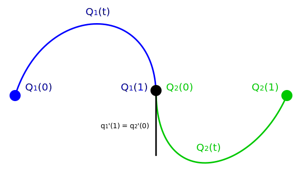
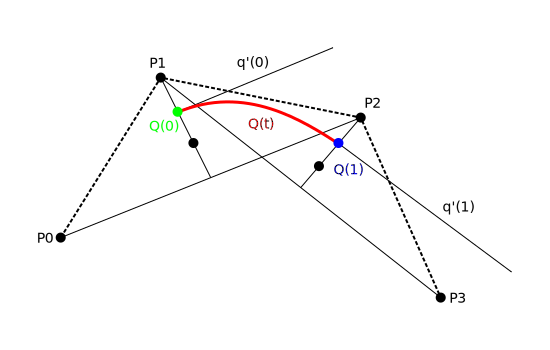

Parametrické křivky
Kurz počítačové grafiky
Autor: Jiří Hnídek / jiri.hnidek@tul.cz
Motivace aneb využití křivek
- Fonty
- Animace (animační křivky)
- Grafický design (loga, ikonky, atd.)
Křivky (Curves)
“Curve need not to be curved!”
Vyjádření křivek
- Explicitní vyjádření (funkce): $$ y = f(x) $$
- Implicitní vyjádření: $$ F(x,y) = 0 $$
- Parametrické vyjádření: $$ \begin{align} x &= x(t) \\ y &= y(t) \quad 0 \leq t \leq 1 \\ z &= z(t) \\ \end{align} $$
-
Příklad: $$ y = x^{2} $$
-
Příklad: $$ x^{2} + y^{2} - 1 = 0 $$
-
Příklad: $$ \begin{align} x &= 2t + 1 \\ y &= -1t + 2 \\ z &= 3t - 4 \\ \end{align} $$
Úsečka
“ One ring to rule them all,
one ring to find them,
one ring to bring them all,
and in the darkness bind them ”
Lomená čára
V počítačové grafice je často nezbytné křivku převést na sadu úseček, protože úsečku je jednoduché rasterizovat (zobrazit na monitoru).Rasterizaci úsečky
Úsečka je část přímky, která je jednoznačně určena body $ P_{1} = [x_{1}, y_{1}]$ a $ P_{2} = [x_{2}, y_{2}] $. Směrnice přímky je:
$$ k = \frac{\Delta x}{\Delta y} = \frac{y_{2} - y_{1}}{x_{1} - x_{2}} $$Pro osmispojitou úsečku s tloušťkou jedna a rezignací na antialiasing lze použít například algoritmus DDA (Digital Differential Analyzer)
Algoritmus DDA
Varianta algoritmu pro $ k < 1 $:
var k = (y2 - y1)/(x2 - x1);
var x = x1;
var y = y1;
while(x < x2) {
draw(x, y);
x += 1;
y += k;
}
Tlouťka, antialising, přerušování, ukončení
V praxi je často nutné vykreslovat úsečku jako geometrický útvar (nejčastěji obdelník) a řešit další netriviální problémy.
Naštěstí existuje spousta knihoven a API (HTML5 Canvas, WebGL, atd.), které tyto problémy řeší za nás.
Parametrické vyjádření křivky
- Bodová rovnice: $$ Q(t) = [x(t), y(t), z(t)] \quad 0 \leq t \leq 1 $$
- Polohový vektor: $$ \begin{align} \vec{q(t)} &= (x(t), y(t), z(t)) = \\ &= Q(t) = [0, 0, 0] \quad 0 \leq t \leq 1 \end{align} $$
Výhody parametrického vyjádření křivek
Oproti funkcím může křivka protínat samu sebe, může se uzavřít, může být rovnoběžná s libovolnou osou, apod.
Parametr $ t $ můžeme chápat jako čas.
Lze je používat jak ve 2D, tak i v 3D prostoru.
Tečný vektor
- Tečný vektor v bodě $ Q(t_{0}) $: $$ \begin{align} \vec{q(t_{0})} &= (x(t_{0})^{\prime}, y(t_{0})^{\prime}, z(t_{0})^{\prime}) = \\ &= \left( \frac{dx(t_{0})}{dt}, \frac{dy(t_{0})}{dt}, \frac{dz(t_{0})}{dt} \right) \\ \end{align} $$
- Důležité po navazování křivek a skládání křivek z menších segmentů
Spojitost
Parametrická spojitost
Říkáme, že křivku $ Q(t) $ nazýváme parametricky spojitou $ C^{n} $, pokud ve všech jejích bodech existuje derivace stupně $ n $
Geometrická spojitost
Dvě křivky $ Q_{1} $ a $ Q_{2} $ jsou geometricky spojité $ G^{n} $ ve společném bodě, pokud je zaručeno:
$$ q_{1}^{(n)} = k q_{2}^{(n)}; \quad k > 0 $$Jinými slovy pro $ G^{1} $ není potřeba rovnost tečných vektorů, ale pouze rovnost tečen v daném bodě.
Je-li křivka $ C^{1} $ je potom i $ G^{1} $ spojitá?
Ano, je-li křivka $ C^{n} $ tak je potom automaticky i $ G^{n} $ spojitá.
Modelování křivek
“Polynoms rule the world of parametric curves”
Polynomiální křivky
Vlastnosti polynomiálních křivek
- Jednoduchý výpočet
- Snadno diferencovatelné (tečné vektory)
- Používají se křivky po částech polynomiální
- Nejčastěji se používají kubiky
Často požadované vlastnosti křivek
- Invariace vůči lineárním transformacím a projekcím
- Křivka leží uvnitř konvexní obálce všech svých řídících bodů
- Lokalita změn polohy/váhy řídícího bodu (křivky po částech polynomiální)
Kubiky
Parametrické vyjádření kubik má následující tvar:
$$ \begin{align} x(t) &= a_{x}t^{3} + b_{x}t^{2} + c_{x}t + d_{x} \\ y(t) &= a_{y}t^{3} + b_{y}t^{2} + c_{y}t + d_{y} \\ z(t) &= a_{z}t^{3} + b_{z}t^{2} + c_{z}t + d_{z} \end{align} $$Maticové vyjádření
$$ Q(t) = \begin{bmatrix} x(t) \\ y(t) \\ z(t) \\ \end{bmatrix} = T.C = \begin{bmatrix} t^3 & t^2 & t & 1 \end{bmatrix} \begin{bmatrix} a_{x} & a_{y} & a_{z} \\ b_{x} & b_{y} & b_{z} \\ c_{x} & c_{y} & c_{z} \\ d_{x} & d_{y} & d_{z} \\ \end{bmatrix} $$Matici $ C $ můžeme vyjádřit: $ C = MG $
$$ \begin{bmatrix} a_{x} & a_{y} & a_{z} \\ b_{x} & b_{y} & b_{z} \\ c_{x} & c_{y} & c_{z} \\ d_{x} & d_{y} & d_{z} \\ \end{bmatrix} = \begin{bmatrix} m_{11} & m_{12} & m_{13} & m_{14} \\ m_{21} & m_{22} & m_{23} & m_{24} \\ m_{31} & m_{32} & m_{33} & m_{34} \\ m_{41} & m_{42} & m_{43} & m_{44} \\ \end{bmatrix} \begin{bmatrix} G_{1} \\ G_{2} \\ G_{3} \\ G_{4} \\ \end{bmatrix} $$kde $ M $ se nazývá bázová matice (určuje druh křivky) a $ G $ je vektor geometrických podmínek (řídící body a vektory)
Výsledný podoba maticového vyjádření:
$$ Q(t) = \begin{bmatrix} t^3 & t^2 & t & 1 \end{bmatrix} \begin{bmatrix} m_{11} & m_{12} & m_{13} & m_{14} \\ m_{21} & m_{22} & m_{23} & m_{24} \\ m_{31} & m_{32} & m_{33} & m_{34} \\ m_{41} & m_{42} & m_{43} & m_{44} \\ \end{bmatrix} \begin{bmatrix} G_{1} \\ G_{2} \\ G_{3} \\ G_{4} \\ \end{bmatrix} $$Bázové polynomy
$$ \begin{align} Q(t) = & (m_{11}t^{3} + m_{21}t^{2} + m_{31}t + m_{41})G_{1} + \\ & (m_{12}t^{3} + m_{22}t^{2} + m_{32}t + m_{42})G_{2} + \\ & (m_{13}t^{3} + m_{23}t^{2} + m_{33}t + m_{43})G_{3} + \\ & (m_{14}t^{3} + m_{24}t^{2} + m_{34}t + m_{44})G_{4} \\ \end{align} $$Určují váhu jednotlivých řídících bodů/vektorů pro různé hodnoty $ t \in \langle 0, 1 \rangle $
Jednoduchý příklad bázových polynomů
Mějme křivku, která je určena body $ P_{1} $ a $ P_{2} $:
$$ Q(t) = (1 - t)P_{1} + tP_{2} \quad 0 \leq t \leq 1 $$O jakou křivku se jedná?
Je to úsečka s krajními body $ P_{1} $ a $ P_{2} $.
Interpolační a aproximační křivky
Interpolační křivky procházejí všemi řídícími body.
Aproximační křivky nemusí procházet žádným ze svých řídící bodů.
Interpolační křivky
Patří mezi ně například Hermitovské kubiky nebo TCB křivky, ale v praxi se příliš npoužívají
Aproximační křivky
Ty se v počítačové grafice používají naopak velmi často. Patří mezi ně především Bézierovy kubyky, B-Spline křivky a konečně NURBs křivky
Bézierovy křivky
“Aproximate or interpolate? That's the question!”
Bézierova křivka n-tého stupně
Je dána vztahem:
$$ Q(t) = \sum_{i=0}^{n} P_{i} B_{i}^{n}(t); \quad t \in \langle 0, 1 \rangle $$kde $ P_{i} $ je i-tý řídící bod a $ B_{i}^{n}(t) $ je Bernsteinův polynom n-tého stupně
$$ B_{i}^{n}(t) = \binom{n}{i} t^{i} (1 - t)^{n-i}; \quad i = 0, 1, \dots, n $$Vlastnosti Bézierovy křivky
- Křivka prochází prvním a řídícím bodem
- Křivka leží uvnitř ohraničující obálky, která je určena řídícimi body
- Při změně polohy jednoho řídícího bodu, dojde ke změně celé křivky
- Nejčastěji se používají kubiky, které se na sebe navazují
Tečné vektory v koncových bodech
$$ \begin{align} \vec{q^{\prime}}(0) &= n(P_{1} - P_{0}) \\ \vec{q^{\prime}}(1) &= n(P_{n} - P_{n-1}) \\ \end{align} $$Spojitost dvou Bézierových křivek
Mějme dvě Bézierovy křivky $ Q_{1}(t) $ a $ Q_{2}(t) $
- Křivky mají spojitost $ C^{0} $, pokud $$ Q_{1}(1) = Q_{2}(0) $$
- Křivky mají spojitost $ C^{1} $, pokud $$ (P_{n-1} - P_{n}) = (R_{0} - R_{1}) $$
- Křivky mají spojitost $ G^{1} $, pokud $$ (P_{n-1} - P_{n}) = k(R_{0} - R_{1}) $$
Bézierovy kubiky
Bézierova křivka 3. stupně
$$ Q(t) = \sum_{i=0}^{3} P_{i} B_{i}(t); \quad t \in \langle 0, 1 \rangle $$Bernstainovy polynomy 3. stupně:
$$ \begin{align} B_{0}(t) &= (1 - t)^{3} \\ B_{1}(t) &= 3t(1 - t)^{2} \\ B_{2}(t) &= 3t^{2}(1 - t) \\ B_{3}(t) &= t^{3} \\ \end{align} $$Výsledná podoba bázových polynomů:
$$ \begin{align} Q(t) = & ( -t^{3} + 3t^{2} - 3t + 1)P_{0} + \\ & ( 3t^{3} - 6t^{2} + 3t)P_{1} + \\ & (-3t^{3} + 3t^{2})P_{2} \\ & (t^{3})P_{3} \\ \end{align} $$Průběh bázových polynomů
Maticový zápis Bézierovy kubiky
$$ Q(t) = \begin{bmatrix} t^{3} & t^{2} & t & 1 \\ \end{bmatrix} \begin{bmatrix} -1 & 3 & -3 & 1 \\ 3 & -6 & 3 & 0 \\ -3 & 3 & 0 & 0 \\ 1 & 0 & 0 & 0 \\ \end{bmatrix} \begin{bmatrix} P_{0} \\ P_{1} \\ P_{2} \\ P_{3} \\ \end{bmatrix} $$Vykreslování Bézierovy křivky
“Adaptive or non-adaptive? That's the question too.”
Neadaptivní vykreslování
Parameter $ t $ zvyšujeme o pevně daný krok (např.: $dt = 0.01$). Dostaneme množinu bodů, které spojíme lomenou čárou.
Prvním problémem je určit, jak má být tento krok jemný.
Druhým problémem je, že rovné části jsou často vykreslované zbytečně jemně a zakřivené části nedostatečně jemně.
Adaptivní algoritmus de Casteljau
Při vykreslování pomocí tohoto algoritmu se využívá dělení Bézierovy křivky na dvě části.
Bézierovy kubiky a HMTL5 - Canvas
var canvas = document.getElementById('myCanvas');
var ctx = canvas.getContext('2d');
ctx.beginPath();
ctx.moveTo(150, 100);
ctx.bezierCurveTo(140,10, 390,10, 390,170);
ctx.lineWidth = 10;
ctx.strokeStyle = 'white';
ctx.lineCap = 'round';
ctx.stroke();
Canvas & Bézier & spol.
- lineTo() vykreslí úsečku
- arc() vykreslí kruhovou výseč
- quadraticCurveTo() vykreslí Bézierovu křivku 2. řádu
- bezierCurveTo() vykreslí Bézierovu kubiky
- beginPath() umožňuje navazovat křivky
Bézierovy kubiky a HTML5 - SVG
SVG - příklad

SVG & Javascript
Coonsovy kubiky
Označována také uniformní racionální B-spline, zkráceně B-spline a je důležitým mezikrokem k pochopení NURBS křivek a NURBS ploch
Konstrukce Coonsovy kubiky z řídících bodů
Výpočet Coonsovy kubiky
Je určena 4 řídícími body: $P_{0}$, $P_{1}$, $P_{2}$, $P_{3}$ a vztahem:
$$ Q(t) = \frac{1}{6} \begin{bmatrix} t^{3} & t^{2} & t & 1 \end{bmatrix} \begin{bmatrix} -1 & 3 & -3 & 1 \\ 3 & -6 & 3 & 0 \\ -3 & 0 & 3 & 0 \\ 1 & 4 & 1 & 0 \end{bmatrix} \begin{bmatrix} P_{0} \\ P_{1} \\ P_{2} \\ P_{3} \\ \end{bmatrix} $$Bázové polynomy Coonsovy kubiky
Počáteční a koncový bod
-
Počáteční bod leží v anitěžišti trojúhelníku tvořeného prvními třemi body ($P_{0}$, $P_{1}$, $P_{2}$), což lze jednoduše vyjádřit vztahem:
$$ Q(0) = \frac{P_{0} + 4P_{1} + P_{2}}{6} $$
-
Koncový bod leží naopak v anitěžišti trojúhelníku tvořeného posledními třemi body ($P_{1}$, $P_{2}$, $P_{3}$), což lze vyjádřit:
$$ Q(1) = \frac{P_{1} + 4P_{2} + P_{3}}{6} $$
Tečné vektory
-
Tečný vektor v počátečním bodu:
$$ q_{0}^{\prime} = \frac{P_{2} - P_{0}}{2} $$
-
Tečný vektor v koncovém bodu:
$$ q_{1}^{\prime} = \frac{P_{3} - P_{1}}{2} $$
Uniformní kubický B-spline
Vzniká navazováním Coonsových kubik na sebe. Poslední tři řídící body jednoho segmentu jsou první tři řídíci body následujícího segmentu.
Pokud máme v nějaké části křivky trojnásobný bod (tři body leží na sobě), tak křivka tímto bodem prochází.
Uzlový vektor určuje hodnoty parametru $ t $ v uzlových bodech, přičemž platí $ t_{i+1} - t \eq c$
NURBS
“Non Uniform Rational B-spline! What?.”
NURBS křivky
- Zobecněním uniformních kubických B-splinů
- Neuniformita říká, že vzdálenost uzlů (koncových bodů segmentů), ve smyslu parametru t, nemusí být konstantní: $ t_{i+1} - t_{i} \neq c$
- Racionalita říká, že řídící body jsou dány svými homogeními souřadnicemi.
- NURBs křivka je tedy určena $ n + 1 $ řídícími body $ P_{i}; i = 0, 1, \dots, n $, řádem B-spline $ k $ a uzlovým vektorem $ U $ délky $ n + k + 1$.
Výpočet NURBs
NURBs křivka je dána následujícím vztahem:
$$ Q(t) = \frac{\sum_{i=0}^{n}w_{i}P_{i}N_{i,k}(t)}{\sum_{i=0}^{n}w_{i}N_{i,k}(t)} $$ kde $ w_{i} $ je váha i-tého bodu a $ N_{i,k}(t) $ jsou normalizované B-spline bázové funkce.Bázové funkce
Jsou definované následujícím rekurentním vztahem:
$$ N_{i,1} = \begin{cases} 1; \quad t_{i} \leq t \le t_{i+1} \\ 0; \quad \end{cases} $$ $$ N_{i,k} = \frac{t - t_{i}}{t_{i+k-1} - t_{i}}N_{i,k-1}(t) + \frac{t_{i+k} - t}{t_{i+k} - t_{i+1}}N_{i+1,k-1}(t) $$Předchozí vztah platí pro:
$$ t_{i} \le t_{i+1+k}; 0 \leq i \leq n $$Pokud se ve jmenovateli vyskytuje nula, tak výsledná hodnota je v tomto případě rovna nule.
Využití NURBs
Především NURBs plochy se používají v CAD/CAM aplikacích.
NURBs a Web
B-spline nebo NURBs není podporováno v SVG ani v Canvasu. Je nutné použít externí knihovnu.
verbnurbs.com